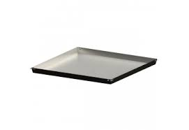
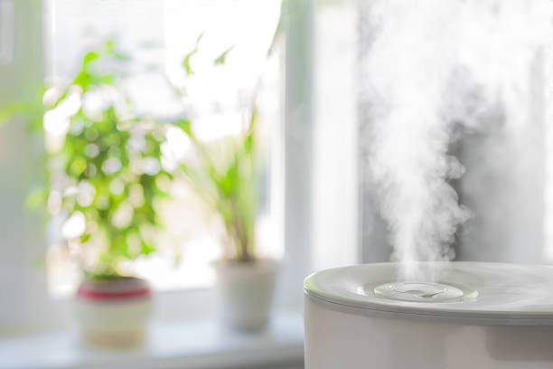

Produits recommandés

Plateau avec de l'eau et des cailloux
Ce plateau avec de l'eau et des cailloux est parfait pour maintenir une atmosphère humide autour de votre Monstera Deliciosa Albo Variegata. Il suffit de placer le pot de la plante sur le plateau pour améliorer l'humidité de l'air ambiant.

Humidificateur d'air
Un humidificateur d'air est un excellent moyen d'assurer une humidité optimale pour votre Monstera Deliciosa Albo Variegata. Cet humidificateur silencieux et efficace garantira que votre plante reçoit l'humidité dont elle a besoin pour prospérer.

Engrais liquide
Cet engrais liquide est spécialement formulé pour les plantes d'intérieur comme la Monstera Deliciosa Albo Variegata. Appliquez-le une fois par mois pendant la période de croissance pour favoriser une croissance saine et vigoureuse.